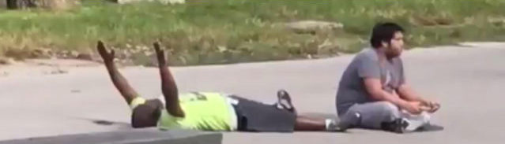

2016-07-25 18:00

A #BlackLivesMatter banner hangs over City Hall in Somerville, Massachusetts. The police union wants it taken down, but Mayor Joseph A. Curtatone is keeping it flying – right next to another one supporting dead officers.
Black Lives Matter (BLM) has grown enormously. It has popped up all over the US and Canada, and there are spinoffs in France, Germany, the Netherlands, Britain, Italy, Spain, Portugal, Belgium, Brazil, and India – wherever racist policing occurs. BLM has thousands of white allies and includes just about every minority affected by discriminatory policing and the prison pipeline.
To describe it as a Black Nationalist movement is just plain wrong.
So, when Derryck Green in Monday’s op-eds describes BLM as a revolutionary terrorist organization and tries to link it with violent Black Nationalism, one can only scratch one’s head and smile. Except that libelous misinformation like this is not funny – though it is par for the course from conservatives.
To be certain, BLM is ideological. It is strident. It has goals. It will not be silenced. Its website cites Black activists whose voices do not necessarily come out of Black churches – but from the streets, from political struggle, and from progressive movements.
Green acknowledges that Micah Xavier Johnson, a cop-killer, was never a member of BLM – but this doesn’t stop him from nevertheless trying to link Johnson to BLM in the next several paragraphs. And Johnson is also a convenient starting point for smearing all activists. Next on Green’s conservative hit list – President Obama, who at one point was a community organizer – or as Green writes, an “agitator.”
Next Green tries to set up a straw man by writing that everyone thinks of BLM as a part of the Civil Rights movement, but that it lacks the moral underpinnings.
Excuse me? Who said that?
Basically, Green just doesn’t like these young black “belligerent” upstarts. He resents their “celebration of black racial pride and solidarity.” (is this really such a bad thing?) If Green were not a black man himself, I’d almost expect the word “uppity” to pop out of his mouth.
Green accuses BLM of “increasingly violent” demands. This is nothing but empty rhetoric.
What’s violent is the epidemic of killings of black people.
Green says that BLM has “peddled lies” about the number of blacks killed by cops. More nonsense. The Washington Post and the Guardian (UK) have had to create databases to track police shootings for the last two years. And Neill Franklin, a 34-year Maryland State Police veteran, has an online petition asking Congress to start a national database.
Why? Because our society doesn’t care enough about black lives to officially track the body count. But we do have preliminary figures – and they’re shocking.
As Somerville Mayor Curtatone’s principled actions show, support for police reform does not have to come at the expense of support for local police. We may never see “Officer Friendly” again, patrolling on foot and stopping by at the local soda fountain, but most Americans want our police officers to be neighbors and treat us like neighbors – not hound us like an occupation force. Most Americans want fair sentencing for crimes – and recognize that no one wins by putting people in “the system” for life.
Many white Americans are happy with their local police forces, and most are good, decent officers. But it can be a totally different story for Black Americans. BLM’s demands reflect this different reality in a racist society and are absolutely correct and needed. And “moral” as well, Mr. Green.
Derryck Green and his fellow conservatives will no doubt be profoundly disappointed by the “lack of courageous condemnation of Black Lives Matter by good and decent people” as the movement continues to grow and attract allies.
But most “good and decent people” would agree – a broken tail light should never be the prelude to what has now become the obscenely routine shooting of an unarmed black person.